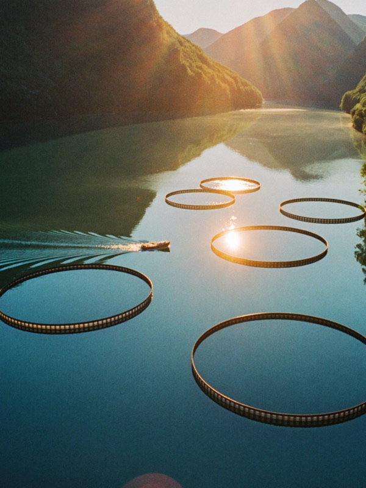
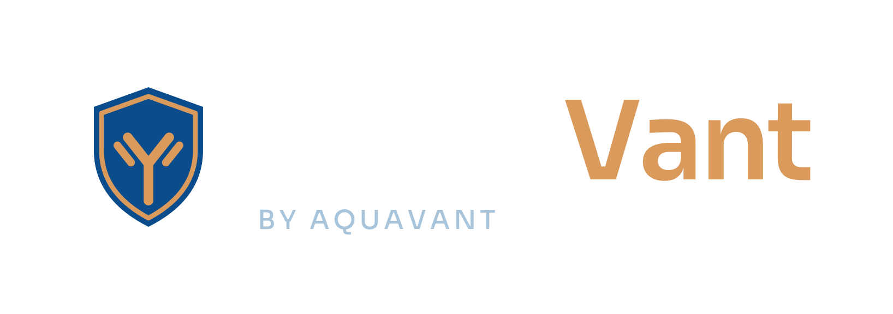
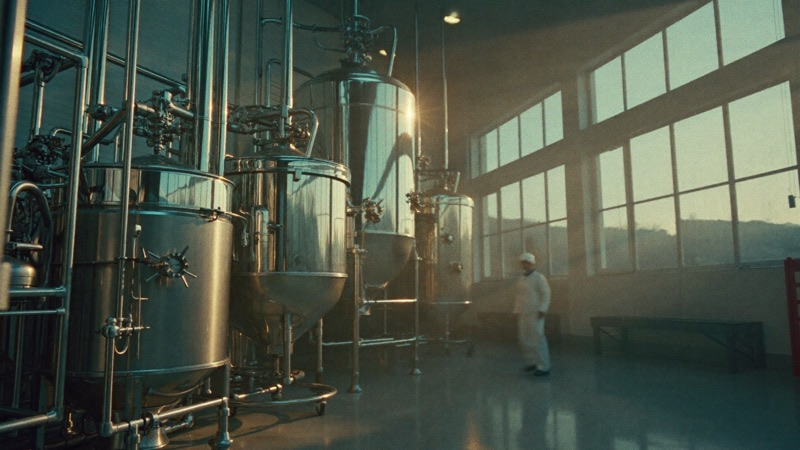
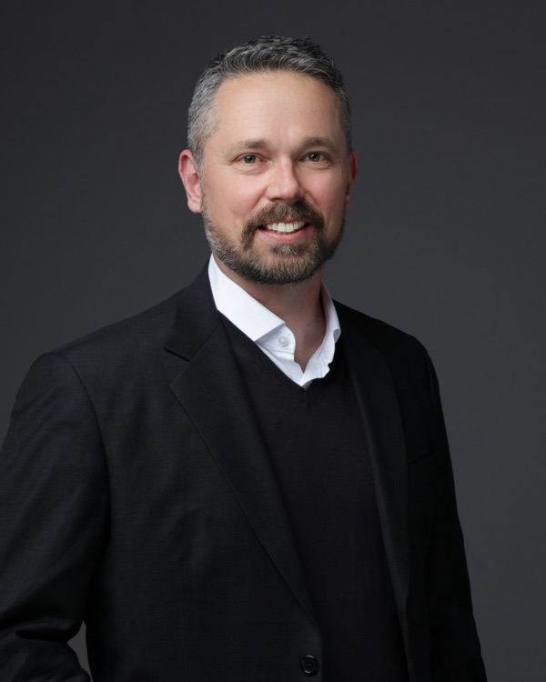

Bedre vaksiner for et sunnere havbruk.
AquaVant utvikler MicroVant, en serie adjuvanser som får fiskevaksiner til å virke. Vi leverer dem til selskapene som lager vaksinene.
Vi er et bioteknologiselskap i Oslo som jobber med én del av fiskevaksinen: adjuvansen. Det er ingrediensen som hjelper immunforsvaret til en vaksinert fisk å reagere, og et fagfelt grunnleggerne våre til sammen har over 45 års erfaring fra.
Vi lager ikke vaksiner selv. Vi utvikler ferdige adjuvansformuleringer til selskapene som gjør det, og gir dem råd om vaksineproduksjon, vaksinasjonsutstyr og kliniske studier.
De første formuleringene våre er laget for laksefisk og tilapia, to av de største gruppene oppdrettsfisk.
Frisk fisk trenger vaksiner som virker.
Sykdom er en av de største utfordringene i fiskeoppdrett. Vaksiner hjelper med å forebygge den, og adjuvansen er en avgjørende del av alle injiserbare fiskevaksiner.
- Sykdomspress
Å forebygge sykdom er fortsatt en stor utfordring for havbruk over hele verden.
- Antibiotikabruk
Der vaksiner er vanskelige å få tak i, er mange markeder fortsatt avhengige av antibiotika.
- Få spesialister
Tilgangen på adjuvanser til fiskevaksiner er fragmentert, så produsentene har få spesialiserte partnere å velge mellom.

MicroVant-adjuvanser

Vi jobber gjennom vaksineprodusentene.
Kundene våre er selskapene som lager fiskevaksiner. Et samarbeid følger som regel fire trinn.
Samtale
Vi starter med art, vaksineformat og behovene i produksjonen deres.
Evaluering
Felles formuleringsarbeid og testing i deres egen FoU.
Kvalifisering
Dokumentasjon, kvalitetskontroll og sikker forsyning.
Leveranse
En kommersiell avtale om levering av adjuvansen.

Kompetanse rundt hele vaksinen.
I tillegg til adjuvansen gir vi produsenter råd om vaksineproduksjon, om utstyr for manuell og automatisk vaksinering og om kliniske studier i laboratoriet og i felt.
Bygget av spesialister på fiskevaksiner.
Grunnleggerne våre har jobbet med fiskehelse, immunologi, FoU, regulatoriske saker og kommersialisering, i globale dyrehelseselskaper og i havbruksbioteknologi.

Kjetil Fyrand Medgründer Fiskehelse og vaksine-FoU, over 25 år Dr. Cheng Xu Medgründer Fiskevaksiner og immunologi, over 20 årLa oss snakke om samarbeid.
Vi vil gjerne høre fra vaksineprodusenter, havbruksselskaper og investorer.